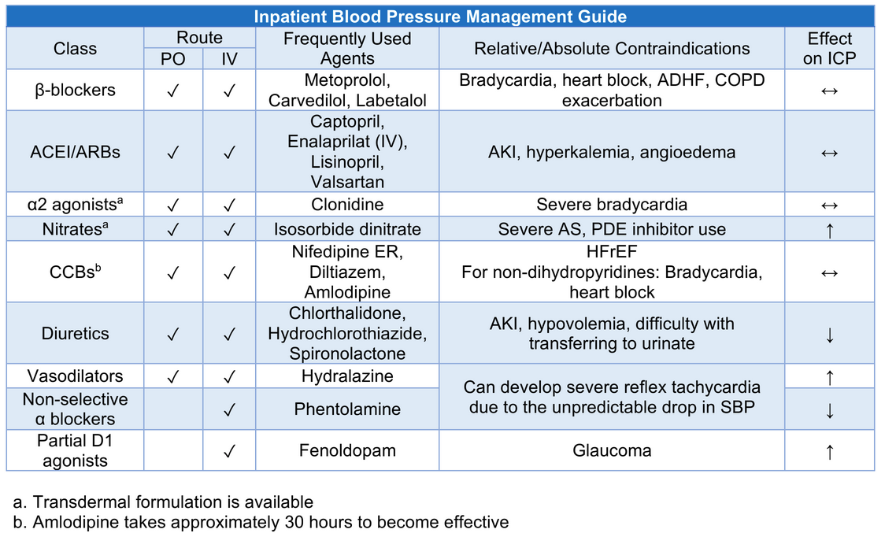
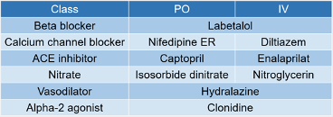
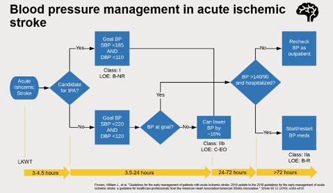

2 Hypertension
2.1 Screening for HTN
The USPSTF recommends HTN screening for those 18+ yo with office BP measurement and confirmation with out-of-clinic measurements (Grade A)
2.2 Flavors of HTN
Elevated BP
Stage I HTN
Stage II HTN
Resistant HTN
Refractory HTN
HTN urgency
HTN emergency
2.3 Inpatient HTN
2.3.1 Inpatient BP Management
Satya Patel from UCLA has a phenomenal resource he’s put together on this. I first caught wind of it from his tweet. This is part of the much larger UCLA Inpatient Pocket Card Set available at http://bit.ly/pocketcardset.


2.3.2 Hypertensive Crises
Headache does not count as evidence of end-organ injury when evaluating a patient for hypertensive emergency
Hypertensive Urgency
- TODO: read the “Things We Do For No Reason” on Acute Treatment of Hypertensive Urgency
Hypertensive Emergency
- In patients with acute ischemic stroke, BP >220/120, and did not receive tPA, reasonable to lower BP by 15% in the first 24 hours
- In patients with acute ischemic stroke, BP <220/120, and did not receive tPA, do not need to initiate hypertension treatment within the first 48-72 hours
- Initiate or re-start antihypertensives ~72 hours after acute ischemic stroke to maintain a BP <140/90

2.3.3 Things to know
- Inpatient BP tends to be higher then Outpatient BPs by ~ 7/3 mmHg (Cappelleri et al. 2017)
- Intensifying antihypertensive meds at hospital discharge is associated with an ↑ risk of readmission and serious adverse events within 30 days. Moreover, outpatient BP was comparable to pre-intensification. (Anderson et al. 2019) (Swapnil 🧵: link)
- Polypharmacy among elderly patients often includes anti-HTN meds. OPTIMISE study: non-inferioty study; RCT of 569 patients > 80 yo comparing anti-HTN medication reduction (stop 1 med) to usual care → anti-HTN med reduction was non-inferior to usual care. (Sheppard et al. 2020)
- Does pain cause ↑ BP? (thread)
- Yes, can cause transient ↑ SBP up to 30 mmHg
- Mechanism: pain affects the HPA axis and increases sympathetic tone (Saccò et al. 2013)